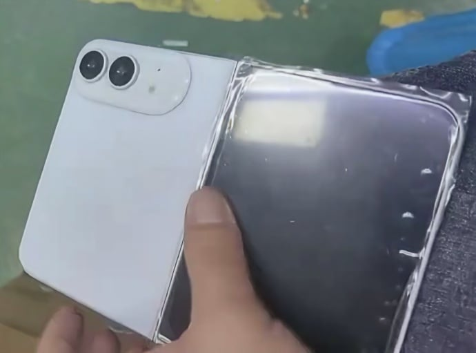

Intelligence Artificielle
Toute l'actualité intelligence artificielle — 16 articles.
Anthropic va commencer à intégrer des filigranes invisibles dans les textes et les images générés par Claude, ces filigranes resteront visibles même lorsque le texte sera copié-collé ailleurs
Anthropic va commencer à intégrer des filigranes invisibles dans les textes et les images générés par Claude, …

Mark Zuckerberg publie un essai complètement déjanté de 6 500 mots sur l'idée de doter tout le monde d'une « superintelligence » issue de l'IA, « l'avenir appartient à tous », mais avant tout à Meta
Mark Zuckerberg publie un essai complètement déjanté de 6 500 mots sur l'idée de doter tout le monde d'une « s…

Des caméras espionnes sur des drones de la Marine ont transmis secrètement des données à la Chine, des bateaux des forces spéciales en mission dans le Golfe étaient équipés de composants chinois
Des caméras espionnes sur des drones de la Marine ont transmis secrètement des données à la Chine, tandis que …

SpaceXAI et Cursor lancent Grok Bot, une application d'agent IA pour l'exécution autonome de tâches sur iPhone et Mac, capable de gérer des processus de bout en bout, à l'instar d'OpenClaw ou de Claude Cowork
SpaceXAI et Cursor lancent Grok Bot, une application d'agent IA pour l'exécution autonome de tâches sur iPhone…
OpenAI lance l'application de bureau officielle ChatGPT pour Linux, compatible avec Codex, répondant ainsi aux demandes répétées des communautés open source et des développeurs
OpenAI lance l'application de bureau officielle ChatGPT pour Linux, compatible avec Codex, répondant ainsi aux…
ChatGPT arrive enfin sur Linux, avec Work et Codex
OpenAI a annoncé, le 11 août 2026, lancer une version preview de son application ChatGPT pour Linux. Elle réun…
Un vieux RPG Le Seigneur des anneaux ressort par surprise
Vous êtes en manque de jeux Le Seigneur des anneaux ? C’est normal : quand bien même la saga fleuve ne quitte …
ChatGPT : le guide pour comprendre tous les outils, modèles et fonctionnalités
OpenAI a multiplié les outils, les modèles et les fonctionnalités autour de ChatGPT. On fait le point sur les …
Les applications les plus téléchargées au 2e trimestre 2026 : le classement complet
Malgré une concurrence toujours plus rude, ChatGPT reste l'application la plus téléchargée dans le monde sur i…
ChatGPT débarque sur Linux, avec Codex et ChatGPT Work
OpenAI propose désormais une application desktop ChatGPT pour Linux, disponible en préversion sur Ubuntu, Debi…
Un ordinateur quantique, un data center IA, Oracle rapproche cloud et serveurs classiques, ce que Quantinuum rend possible - infos-it.fr
Un ordinateur quantique, un data center IA, Oracle rapproche cloud et serveurs classiques, ce que Quantinuum…
ChatGPT révolutionne l'écosystème IA avec ses outils et intégrations - Brief IA
ChatGPT révolutionne l'écosystème IA avec ses outils et intégrations Brief IA…
Une arnaque téléphonique piège des centaines de mairies en France
Un commercial a promis à une mairie dans le Cher un standard téléphonique complet. Celle-ci s’est retrouvée av…
Comment suivre l’éclipse du 12 août 2026 en direct ?
L'Agence spatiale européenne (ESA) propose deux retransmissions en direct de l’événement : l’une avec des inte…

« Tout le monde l’appelle iPhone Ultra en interne » : le nom du premier iPhone pliant semble décidé
L'iPhone pliant d'Apple serait nommé iPhone Ultra en interne. Une source très bien informée l'a confirmé.…
Insta360 X6 : cette caméra 360 veut monter vos vidéos à votre place
Insta360 vient d'officialiser la X6, une nouvelle caméra à 360 degrés qui mise sur des capteurs agrandis, l'en…